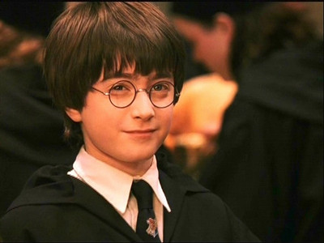
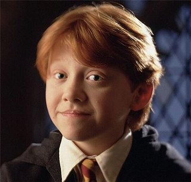

哈利·波特（Harry James Potter）
该作主角，生于1980年7月31日，是巫师夫妇詹姆·波特和莉莉·波特的独生子。他是伊诺特‧皮福雷的后裔（在国王十字车站与邓布利多谈话中证实），而书中的反派势力伏地魔，则是卡德马‧皮福雷之后代，因此两人有共同的祖先。哈利有着黑发绿眼，就像他的父亲一样，黑色的头发总是四处乱翘，有着波特家族的飞行天赋。宠物是霍格沃茨钥匙管理员鲁伯·海格在他十一岁生日时赠与的礼物——雪鸮海德薇（Hedwig）。尚在襁褓时被伏地魔企图谋杀，由于母亲牺牲自己施法保护使得伏地魔咒语反弹，他成为历史上唯一在索命咒下生还的人，额头上留有一道闪电形伤疤。在满十七岁时，终于摆脱未成年魔法侦测咒。他发现自己和伏地魔两者无法并存于世之后，就跟从邓布利多的指引，对抗伏地魔，但却成了被伏地魔控制的魔法部通缉的头号不受欢迎人物。后来在第七集最后大战返回霍格沃茨，获得多数教授、学生的支持，并打败伏地魔。
-
 赫敏·格兰杰（Hermione Jean Granger）生于1979年9月19日，出身一个麻瓜家庭。在书中以一个喜好钻研学术及无所不知的聪明女孩形象出现，有时显得独断专行，她的知识在他们许多的冒险旅程中证明有用。她唯一不喜爱的一个主科是占卜学，认为是“不精确”的学问。赫敏到霍格沃茨不久就成为全年级最聪明的学生。她不仅知道每个问题的答案，还记得读过的每本书的内容，并乐于将自己的知识告诉别人。因此她的求学生涯开始不久就获得了“格兰芬多万事通”的绰号，她因每堂课都积极举手回答问题并乐此不疲而扬名。
赫敏·格兰杰（Hermione Jean Granger）生于1979年9月19日，出身一个麻瓜家庭。在书中以一个喜好钻研学术及无所不知的聪明女孩形象出现，有时显得独断专行，她的知识在他们许多的冒险旅程中证明有用。她唯一不喜爱的一个主科是占卜学，认为是“不精确”的学问。赫敏到霍格沃茨不久就成为全年级最聪明的学生。她不仅知道每个问题的答案，还记得读过的每本书的内容，并乐于将自己的知识告诉别人。因此她的求学生涯开始不久就获得了“格兰芬多万事通”的绰号，她因每堂课都积极举手回答问题并乐此不疲而扬名。 -
罗恩·韦斯莱（Ronald Bilius "Ron" Weasley）生于1980年3月1日，哈利在霍格沃茨最要好的朋友，书中的喜剧角色。韦斯莱家族是古老的纯血统家族，他们都拥有一头火焰般的红发。罗恩的爸爸是魔法部禁止滥用麻瓜物品司的员工，薪金不高，孩子又多，所以罗恩家境不富大多数的东西都是二手的，他很在意这一点。他和哈利是铁哥们，最后和赫敏结婚，并和哈利在魔法部成为同事。